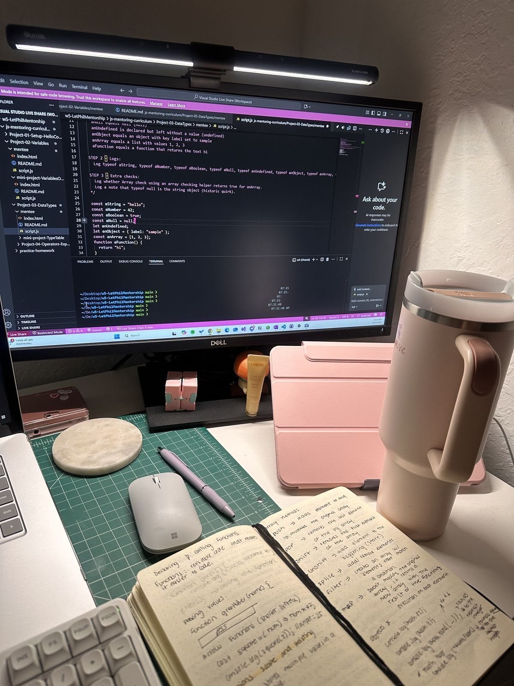

Mariana Argolo Santana
Sobre mim
Meu nome é Mariana Argolo Santana e moro na Bahia, Brasil. Sou estudante do curso WDD 131 e estou aprendendo a criar páginas com HTML, CSS e JavaScript. Gosto de aprender passo a passo e transformar ideias simples em projetos reais na tela.
Meus objetivos no curso

Meu objetivo é entender melhor a estrutura de uma página web, organizar estilos de forma consistente com CSS e usar JavaScript para deixar o conteúdo mais dinâmico. No fim do semestre, quero ter um portfólio simples, funcional e bem organizado.